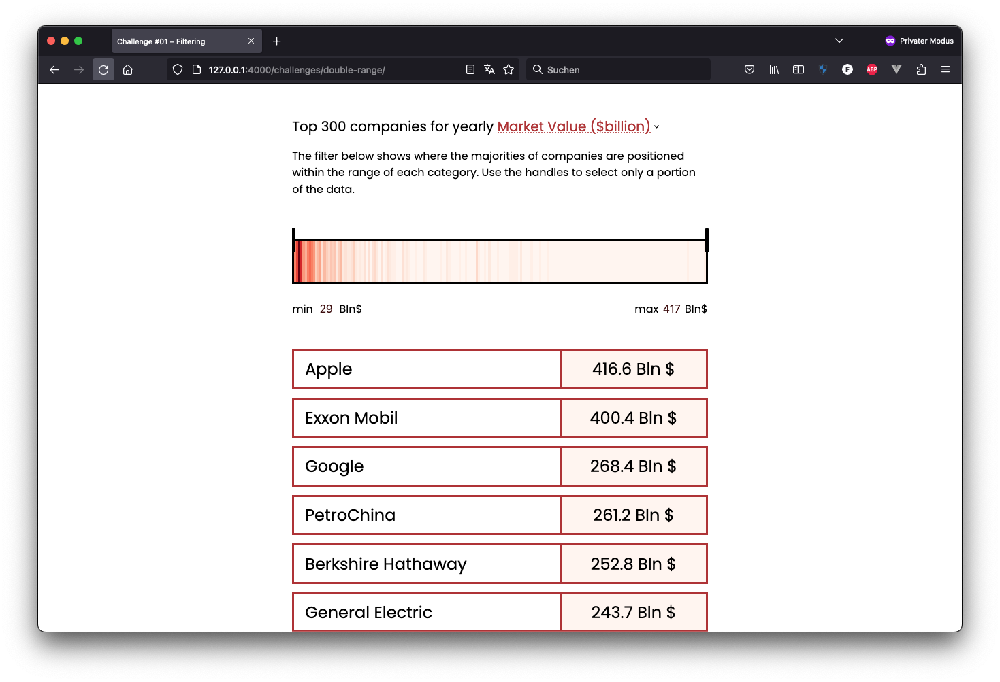
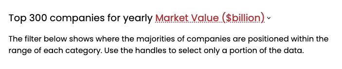
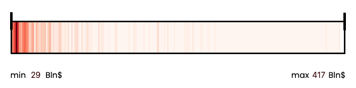
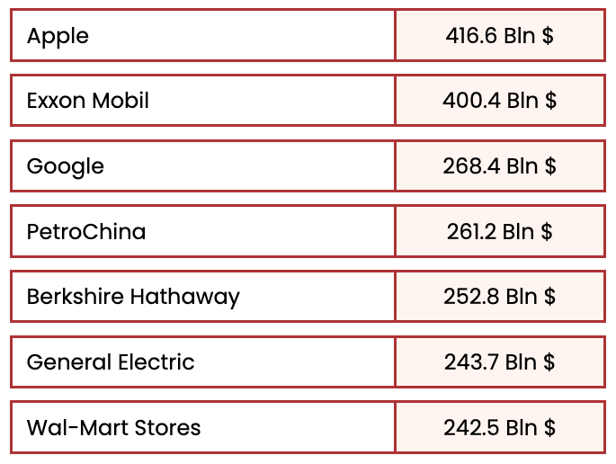

Double range filter with heatmap
Vanilla JS
Demo
https://uclab-potsdam.github.io/tutorials-template/challenges/double-range/
This double range slider has an integrated heatmap to allow readers to filter entries based on data density. The example is built using vanilla js and is useful to grasp how to implement very basic interactions.
Table of contents
Concept
A very simple form of presentation for large datasets is the creation of a list, including all items — unordered or ordered based on one or more rules. Lists are useful and simple, they ideally show everything the user needs to know about one instance. Digital interfaces allow for lists to become interactive, meaning that users are not forced to go from the beginning to the end hoping to spot interesting entities, but they become able to filter, search, and re-arrange items. When searching or re-arranging, users treat lists as the context of interaction. Filtering bears similarities with folding and unfolding a piece of paper. At any point, the user is able to change its shape and size. However, the excess of paper is not cut or removed, but simply temporarily hidden from the viewer.
The japanese art of Origami where paper is folded for cerimonial and recreative reasons, source: wikimedia commons, MoMa
Filtering a list of entities resembles folding operations. Individual entities remain part of their list, but are granted priority over others. The reference context is not lost. At any moment, users can reset (unfold) the list and start anew.
Despite its flexibility, lists present also serious limitations. One problem, for instance, concerns the length of lists. How many items can we include before it becomes utterly complicated for the reader to browse through a list? How much information can we add before it gets to overwhelming? When working with data, one very elementary form of interaction is filtering. By performing filtering operations, users decide which items make or not the cut. It’s a form of complexity reduction and it can happen in many ways.
The japanese art of Origami where paper is folded for cerimonial and recreative reasons, source: wikimedia commons, MoMa
For this exercise, filtering happens with the support of data visualization. The idea is to not only let the reader browse the elements of the list and pick between some broad categories, but also allow them to gain a quick overview of how the list is composed. Through this overview, readers can filter down the list to a handful of elements.
Data
The data picked for this challenge is a list of the top 2000 companies globally by Joakim Arvidsson on Kaggle. It is a “Global ranking of the top 2000 largest companies in the world based on revenue, profits, assets, and market value, as of 2020. Also includes country, continent, and latitude, longitude coordinates.”.
The dataset presents the following columns:
| Global rank | Company | Sales ($billions) | Assets ($billions) | Market Value | Country | Continent | Latitude | Longitude |
For this exercise, we will take into consideration only a selection of them:
| Company | Sales ($billions) | Assets ($billions) | Market Value |
Interface elements

The interface is really simple. It includes three main elements:
- One dropdown menu.
- One double range selector.
- The actual list of entities.
Dropdown

Range selector

List of entities
